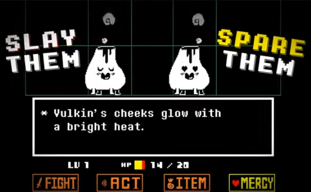

UNDERTALE es un videojuego indie creado por Toby Fox y lanzado en 2015. Se trata de un juego de rol por turnos en el que el jugador debe escapar de un subsuelo habitado por monstruos. El juego estuvo en desarrollo varios años, y, a pesar de tratarse de un proyecto de práctica del creador, ganó inmensa popularidad algunos años tras su lanzamiento gracias a su innovador sistema de combate que permitía resolver los encuentros sin usar violencia.
El juego puede encontrarse tanto en consolas como en PC, y ha sido un fenómeno de gran importancia en Internet, llegando a regalarse una copia del juego al Papa en 2022. Se considera el mejor videojuego de todos los tiempos por muchas personas gracias a su historia, personajes carismáticos, y música memorable.